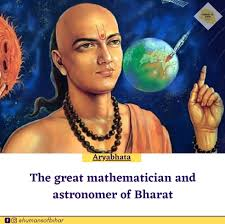
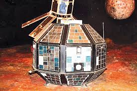

Mathematics
Aryabhata (476 CE) made key contributions to mathematics and astronomy.
1. Mathematics:
- Place Value System and Zero: Aryabhata helped lay foundation for decimal system.
- Trigonometry: he introduced the sine function and developed early trigonometric methods.
- Pi (π): He approximated π as 3.1416.
- Algebra: Worked on solving linear and quadratic equations.
- Square Roots: Proposed methods for approximating square roots.
2. Astronomy:
- Earth's Rotation: Aryabhata proposed the Earth's Rotation on its axis, explaining the apparent motion of the stars.
- Eclipses: Corrcetly explained the solar and lunar eclipses.
- Earth's Circumference: Estimated the Earth's circumference to be around 39,986km.
- Year Lengths: Distinguished between the sidereal and tropical years.
3. Other Works:
- Aryabhata: His famous work, influencing later Indians and global scholars.
Aryabhata'a groundbreaking contributions shaped the developement of mathematics and astronomy.


Home